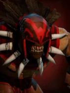
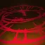

Blood Rite
Active ability: Activates on Full Mana
Bloodseeker baptizes an area centred at himself in sacred blood. After the ritual completes, any enemies caught in the area takePure Damage, and becomesilenced.
| ★ | ★★ | ★★★ | |
|---|---|---|---|
| Blood Rite Effect Radius | 300 | 400 | 500 |
| Silence Duration | 2 | 2 | 3 |
| Blood Rite Effect Delay | 2.6 | ||
| Pure Damage | 200 | 250 | 350 |
| Cooldown (s) | 10 | 8 | 6 |
| Mana cost | 75 | ||
The Flayed Twins are ever willing to aid those who spill blood upon the field of battle.
Stats
| ★ | ★★ | ★★★ | |
|---|---|---|---|
| Health | 600 | 1200 | 2400 |
| Mana | 100 | 100 | 100 |
| Armor | 3 | 3 | 3 |
| Magic resistance | 10% | 10% | 10% |
| Attack damage | 55–60 | 110–120 | 220–240 |
| Attack interval (s) | 1.1 | 1.1 | 1.1 |
| Attack range | 205 | 205 | 205 |
| Move speed | 500 | 500 | 500 |
 Orc · Battle Hardened
Orc · Battle Hardened
- (2) All allies gain +100 max HP.
- (4) All allies gain another +400 max HP (+500 total).
- (6) All allies gain +10 max HP for every point of HP your courier has lost, up to +800.
 Shaman · Hex
Shaman · Hex
Shamans cast their skill with 75% of the normal mana.
- (3) After casting its skill or using an active item, a Shaman spends about 1.25s transforming into a random piece 2 levels higher (capped by your courier level and at 9). The new form has no items (your items are kept safe) and dies after 20-25 seconds.
- (6) The transformed piece keeps its items, but each one becomes a random item 2 tiers higher.